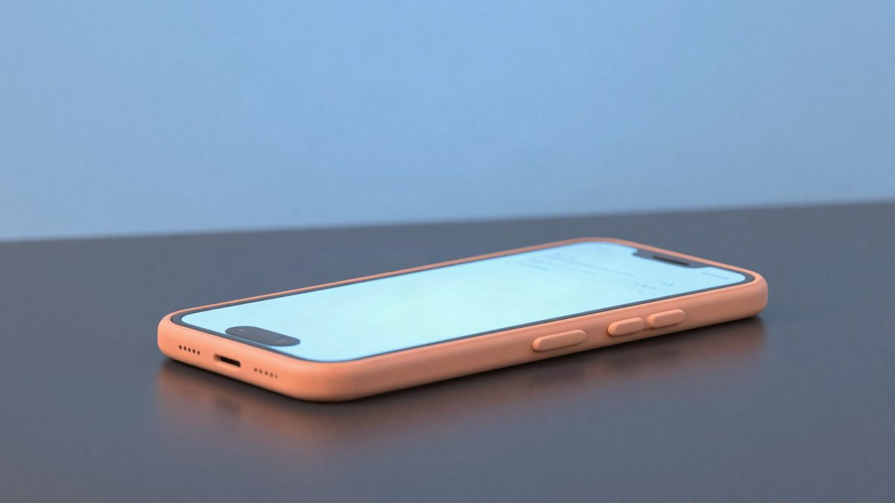

Signal na iPhoneu po defaultu blokira screenshotove kako Siri AI ne bi čitala chatove

Novi update Signala za iPhone uvodi postavku "Block Siri AI", koja je po defaultu uključena i onemogućuje screenshotove u aplikaciji te prikaz u App Switcheru. Signal je za Reuters objasnio da Apple developerima trenutačno ne nudi bolje alate za zaštitu sadržaja od Siri AI-ja. Postavka se može isključiti u postavkama privatnosti.
Signal je izdao update za iPhone koji po defaultu onemogućuje screenshotove unutar aplikacije. Cilj je spriječiti Siri AI da čita sadržaj chatova. Kad korisnik nakon updatea pokuša napraviti screenshot, vidjet će poruku: "Screenshot prevented by 'Block Siri AI' setting."
Signal je za Reuters objasnio da Apple trenutačno ne nudi iOS developerima bolje alate za zaštitu sadržaja aplikacije od Siri AI-ja i AI agenata trećih strana. Zato je posegnuo za blokadom screenshotova.
Kako isključiti postavku
Opcija se zove "Block Siri AI" i nalazi se u postavkama privatnosti aplikacije. Uključena je po defaultu, a tko želi ponovno snimati zaslon, može je isključiti.
Opis postavke u aplikaciji glasi: "Prevent Siri AI from scanning Signal content. This will also block you from taking screenshots in the app and App Switcher." Blokada dakle ne vrijedi samo za screenshotove unutar aplikacije, nego i za prikaz u App Switcheru.
Za Signalovu Mac aplikaciju ne postoji ista takva postavka.
Apple već nudi vlastitu opciju
Apple već omogućuje blokiranje Siri AI-ja za aplikacije koje korisnik ručno isključi, a u iOS-u 27.2 to je postalo još jednostavnije. Signal ipak smatra da mora sam poduzeti korak, umjesto da ljude upućuje na sistemsku opciju.
Odluka otvara pitanje nedostaju li iOS developerima alati za zaštitu privatnosti sadržaja u njihovim aplikacijama.
Izvor: 9to5Mac